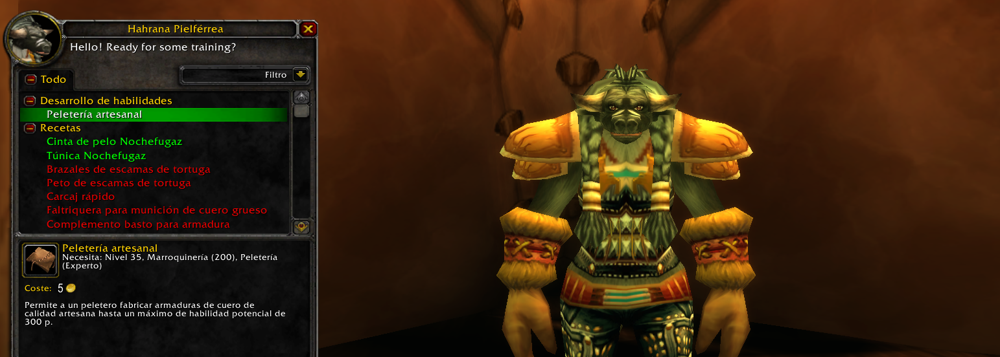

Guía de Pelateria 1 a 300
Los peleteros recogen los pellejos duros, espinosos o recios de las bestias de todas partes y los transforman en productos útiles. Entre estas creaciones, lo primero son las armaduras más ligeras, de cuero o malla, junto con las capas, las bolsas, y parches y costuras que aumentan los valores defensivos de las armaduras. El arte de la peletería es útil para aquellos que quieren equipar a los demás y a sí mismos con armaduras adecuadas, así como para aquellos que quieren obtener beneficios vendiendo sus creaciones poco comunes.
La mayoría de los trabajos de peletería se pueden realizar en cualquier parte, siempre y cuando tengas los materiales necesarios. Es frecuente que los peleteros también se especialicen en desuello, ya que es la manera más eficiente de asegurarse el suministro de cuero necesario para sus creaciones.

Como sucede con cualquier profesión, nuestra primera parada debe ser junto al instructor de peletería (Orgrimmar, Ventormenta...) para que nos enseñe esta profesión primaria y el desarrollo de habilidad "Aprendiz peletero" que nos permitirá ponernos manos a la obra con esta profesión.
La presente guía la dividiremos en dos partes. La primera se centrará exclusivamente en subir la profesión hasta los 300 puntos de habilidad y ala segunda, trataremos las diferentes especializaciones que podemos tener con peletería a partir de los 225 puntos en la profesión.

Pelatería 1-55
Una vez hemos aprendido el rango "Aprendiz peletero" procederemos a realizar los siguientes objetos para subir la profesión a 55 puntos de habilidad.
- Refuerzo para armadura ligero hasta llegar a los 45 puntos de habilidad (47 unidades aproximadamente creadas).
- Capa de cuero cosida a mano hasta llegar a los 55 puntos de habilidad (15 unidades aproximadamente creadas).
Pelatería 55-125
En este punto ya tendremos la capacidad de aprender el rango "Oficial peletero" de nuestros instructores de profesión. A continuación, procederemos a realizar los siguientes objetos para subir nuestra profesión a los 125 puntos de habilidad.
- Guantes de cuero estampado hasta llegar a los 100 puntos de habilidad (48 unidades aproximadamente creadas).
- Cinturón de cuero refinado hasta llegar a los 125 puntos de habilidad (29 unidades aproximadamente creadas).
Pelatería 125-225
Llegas a este punto tendremos la capacidad de aprender el rango "Experto peletero" de los siguientes instructores: Una en Cima del Trueno (Horda) y Telonis en Darnassus (Alianza). A continuación, procederemos a realizar los siguientes objetos para subir nuestra profesión a los 225 puntos de habilidad.
- Botas de cuero oscuro hasta llegar a los 137 puntos de habilidad (19 unidades aproximadamente creadas).
- Pantalones de cuero oscuro hasta llegar a los 155 puntos de habilidad (24 unidades aproximadamente creadas).
- Guantes de cuero de montañero hasta llegar a los 165 puntos de habilidad (10 unidades creadas).
- Refuerzo para armadura pesado hasta llegar a los 180 puntos de habilidad (17 unidades aproximadamente creadas).
- Sobrehombros barbáricos hasta llegar a los 195 puntos de habilidad (15 unidades creadas).
- Brazales oscurecidos hasta llegar a los 205 puntos de habilidad (10 unidades creadas).
A continuación y antes de realizar la última receta para llegar a 225 punto en Peletería, acudiremos junto a Hahrana Pielférrea en el Campamento Mojache (Feralas) si pertenecemos a la horda o junto a Drakk Petramano en Tierras del Interior si nuestra facción es la Alianza. Allí aprenderemos la "peletería artesanal" y nuevas recetas que nos ayudarán a seguir subiendo.
- Cinta Nochefugaz hasta llegar a los 225 puntos de habilidad (20 unidades creadas).

Pelatería 225-300
Última parte de nuestra subida con la profesión de peletería. A continuación, procederemos a realizar los siguientes objetos para subir nuestra profesión a los 300 puntos de habilidad.
- Faltriquera de munición de cuero grueso hasta llegar a los 235 puntos de habilidad (10 unidades creadas).
- Pantalones Nochefugaz hasta llegar a los 250 puntos de habilidad (15 unidades creadas).
- Botas Nochefugaz hasta llegar a los 260 puntos de habilidad (12 unidades aproximadamente creadas).
Una vez tenemos los 260 puntos de habilidad en peletería, acudiremos a comprar el Patrón: guanteletes de cuero maligno a Werg Filo Grueso en el Baluarte (Claros de Tirisfal) si perteneces a la Horda o bien a Leonard Porter en el Campamento del Orvallo (Tierras de la Pesta del Oeste) si perteneces a la Alianza.
- Guanteletes de cuero maligno hasta llegar a los 270 puntos de habilidad (10 unidades creadas).
A continuación y con 270 puntos de habilidad en peletería, nos dirigiremos hasta Azshara para derrotar a Pícaro Legashi hasta que consigamos Patrón: brazales de cuero maligno.
- Brazales de cuero maligno hasta llegar a los 280 puntos de habilidad (10 unidades creadas).

El último paso para llegar a los 300 puntos de habilidad de peletería nos llevará a conseguir el Patrón: cinta de cuero maligno, derrotando a Timador Fuego de Jade en Frondavil. Conseguido el patrón de peletería procederemos a concluir con la profesión.
- Cinta de cuero maligno hasta llegar a los 300 puntos de habilidad (20 unidades creadas).